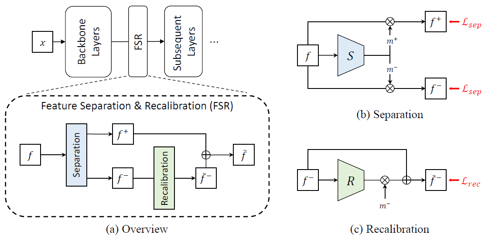
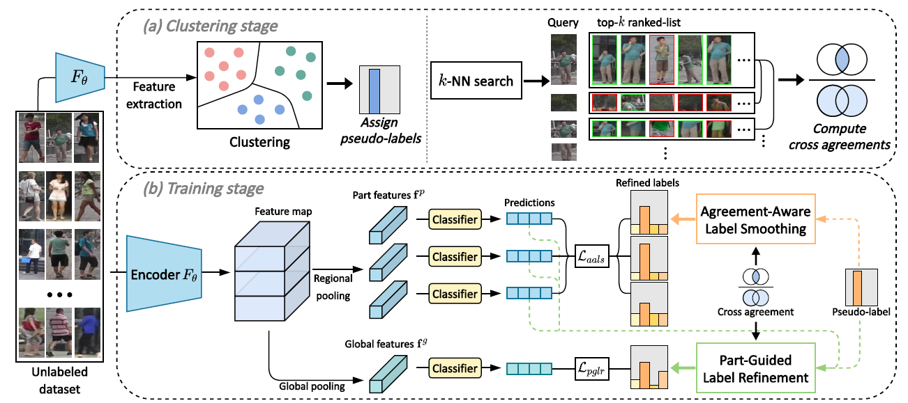
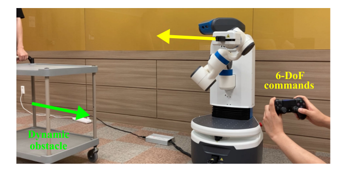

|
Education
Mar. 2021 - Current: Ph.D. Student in Computer Science, KAIST (Advisor: Sung-Eui Yoon)
Mar. 2019 - Feb. 2021: M.S. in Computer Science, KAIST (Advisor: Sung-Eui Yoon)
Mar. 2015 - Feb. 2019: B.S. in Computer Science, Korea University
|
|

|
Feature Separation and Recalibration for Adversarial Robustness
Woo Jae Kim, Yoonki Cho, Junsik Jung, Sung-Eui Yoon
CVPR, 2023 (Highlights)
arXiv /
Project /
Code /
Video
|
|

|
Part-based Pseudo Label Refinement for Unsupervised Person Re-identification
Yoonki Cho, Woo Jae Kim, Seunghoon Hong, Sung-Eui Yoon
CVPR, 2022
arXiv /
Project /
Code /
Video
|
|

|
RCIK: Real-Time Collision-Free Inverse Kinematics Using a Collision-Cost Prediction Network
Mincheul Kang, Yoonki Cho, Sung-Eui Yoon
IEEE Robotics and Automation Letters (RA-L), 2022
Paper /
Project /
Code /
Video
|
|
Experiences
Research Assistant, National Forensic Service, Wonju, Korea (Jul. 2017 - Dec. 2017)
Teaching Assistant, KAIST, Daejeon, Korea
[CS341] Introduction to Computer Networks, Fall 2019
[CS576] Computer Vision, Spring 2020
[CS360] Introduction to Database, Spring 2021
[CS492(I)] Introduction to Deep Learning, Fall 2022
[CS230] System Programming, Spring 2023
|
|